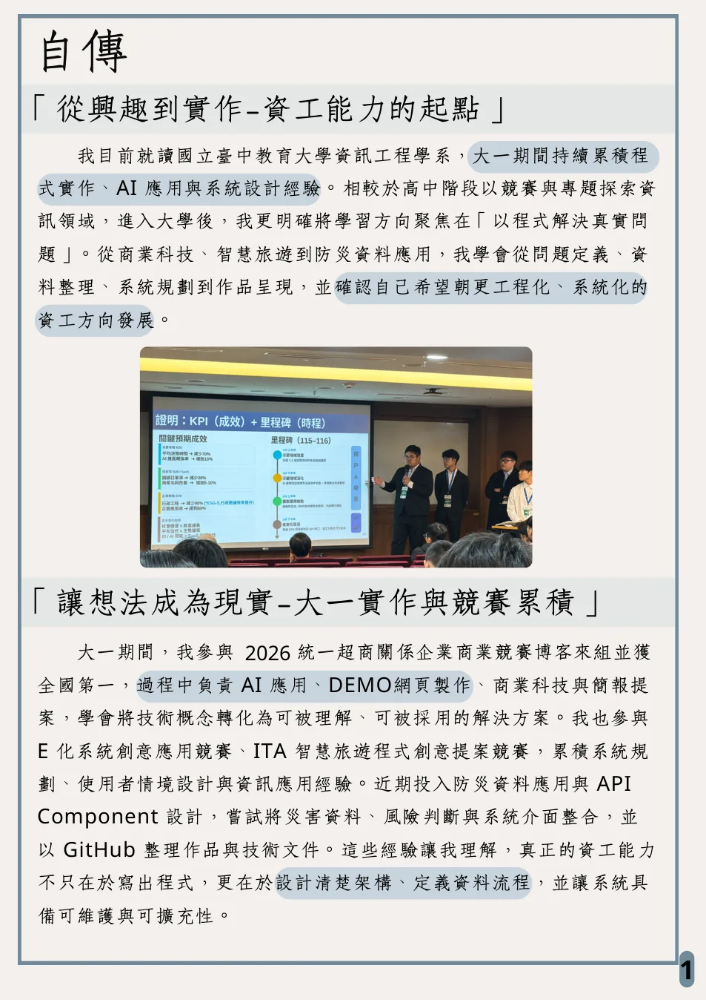
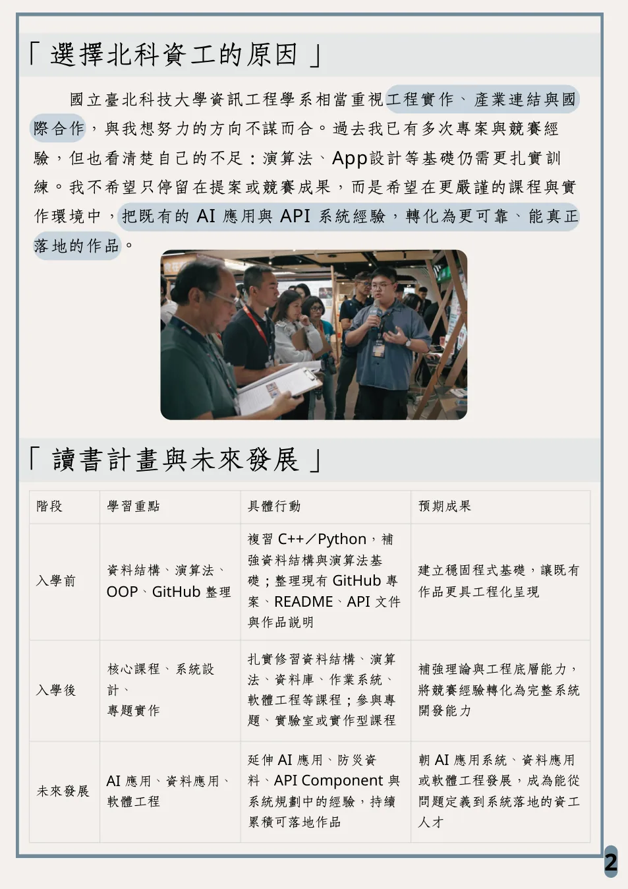

自傳、轉學動機與讀書計畫摘要
這頁把備審 PDF 的長段文字改成網站可快速閱讀的版本。重點是把「為什麼轉北科資工」和「入學前後要補什麼」講清楚。
Autobiography
從興趣到實作
我目前就讀國立臺中教育大學資訊工程學系，大一期間持續累積程式實作、AI 應用與系統設計經驗。相比高中階段以競賽與專題探索資訊領域，進入大學後，我更明確聚焦在「以程式解決真實問題」。
從商業科技、智慧旅遊到防災資料應用，我開始練習把問題定義、資料整理、系統規劃、Demo 呈現與 GitHub 文件整理串起來。


Why NTUT CS
選擇北科資工的理由
我希望在更重視工程實作、產業連結與系統化訓練的環境中，把現有 AI 應用、API Component、App 與後端作品轉化為更可靠、可維護、可擴充的資工專案。
目前的不足也很明確：資料結構、演算法、App 架構、軟體工程與測試都需要更扎實。這些不是用漂亮頁面能補的，必須靠課程與專題實作補上。
Study Plan
讀書計畫
| 階段 | 學習重點 | 具體行動 | 預期成果 |
|---|---|---|---|
| 入學前 | 資料結構、演算法、OOP、GitHub 整理 | 複習 C++ / Python，整理 README、API 文件與作品說明。 | 讓既有作品更工程化，並補強基礎。 |
| 入學後 | 核心課程、系統設計、專題實作 | 扎實修習資料結構、演算法、資料庫、作業系統、軟體工程，參與實作型課程或實驗室。 | 把競賽經驗轉化為完整系統開發能力。 |
| 未來發展 | AI 應用、資料應用、軟體工程 | 延伸防災資料、API Component、AI 應用與 App 系統經驗，持續累積可落地作品。 | 成為能從問題定義到系統落地的資工人才。 |